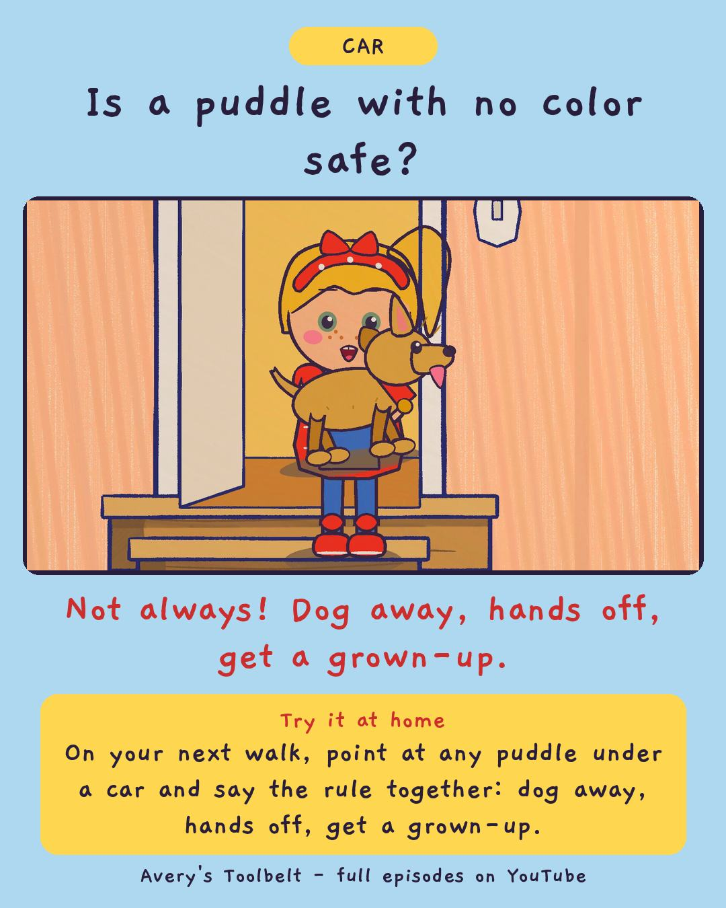

The PuddleWhat's That Puddle Under the Car?
那攤水

Is a puddle with no color safe?
Not always! Dog away, hands off, get a grown-up.
Try it at home
On your next walk, point at any puddle under a car and say the rule together: dog away, hands off, get a grown-up.
Free printable coloring page (PDF) Watch the full episode on YouTubeAbout this episode, for grown-ups
It is April, the snow is melting off everything, and there is a puddle under Betsy. Spec the puppy is walking straight at it, nose down. Avery doesn't know what the puddle is - so she gets the dog away and shouts for Dad.
Dad comes at a run, in his socks. On the other side of the house door, Spec tries every way he can think of to get back in, and Gus sits on the step with his cereal, reporting each attempt like a sportscaster, and does nothing about any of them.
What children find out: any puddle under a car means dog away, grown-up, hands off. The color helps a grown-up know what it is - and no color does not mean safe. Finding out is the grown-up's job.
For grown-ups: an episode about doing exactly the right thing and then feeling silly when it turns out to be melted snow. "You're not going to be sorry for that one."